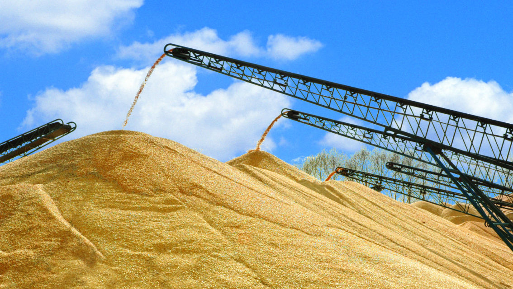

相信每个人都不少见这样的报道：种粮大户开着先进大机械种地，然而现实的农村究竟是什么样子，你真的不见得清楚。现实当中是，“70后”不愿种地，“80后”不会种地，“90后”不提种地。当美好愿景与三个“不种地”相遇，该是怎样的尴尬呢？（5月30日中国新闻网）
随着越来越多的农村人口流向城市，城市化率越来越高，农业人口却也在同比例的减少。当“四化”同步的目标已经确定，70后不愿种地，80后不会种地，90后不提种地的“三不种地”现象，已经预示着一种潜在的阻力正在形成，给农业现代化提出了一道不大不小的难题。如何破解这道难题，既事关农业现代化是否能够真正实现，也事关眼下粮食安全问题，倘若没有种地人，又何谈保障？
当下种地队伍最明显的特征，是所谓的“三八九九”人员组成，在一些地区，有的壮年妇女在农忙时也很难找到。在一些地方，一些土地承包大户在开工前，首先要为老年雇佣者量血压，甚至担心他们在劳动时不用太劳累，以免因老年病而出现工伤。这就是当下不少地区种地队伍的现状。与此同时，种地人的减少，土地的低效率种植甚至荒废，更为农业现代化蒙上了又一层挥之不去的阴影。
这双重不利因素，迫切需要在“三八九九”种地队伍中注入“新鲜的血液”，使那些有劳动能力，能够应对农业生产需求的人员尽速回到农业中来。
在一些地方，农民把土地流转出去，或将土地入股，然后再在龙头企业、农业合作社等组织中打工，实现就近就业，收入要比单纯的种地高上许多。这应该是当前破解种地队伍短缺的一个方法。
但从长远看，农业现代化，单纯依靠传统农民、依靠传统种植技术是很难实现的。随着时间的推进，上世纪五六十年代出生的农民，也将进入老年时期，70后、80后、90后这些人员的“三不种地”情结，必须加以梳解才行。
职业农民的培植和壮大，应该从“三不种地”人员开始进行培植。
推进这项工作，首先需要确保农民不再是身份和地位的象征，而是一种职业的再塑、市场的再塑。职业农民掌握了足够先进的农业生产科技和市场交易知识，有了平等的社会保障机制和发展机会，打通农业和其他行业的通道，才能够足以吸引人才向农业“逆流动”。
其次，需要通过政策支持，让农业有奔头。需要在土地流转、自然灾害防控、金融信贷和技术指导等方面给予全面支持，稳定农民对农业投入的生产预期，夯实农业规模化基础，为农业现代化奠定坚实基础，让有学识有能力的人愿意回到农村中去，特别是愿意参与到农业生产中去。
第三，让农业产生更大的经济附加值。要改变传统农业现状，推动农业信息化水平，加快农业工业化、农业与旅游业等二三产业的对接，实现第一产业“接二连三”式发展，让农业收入更多元化、更有附加值，更有经济保障。
不管政策说的多么花哨，只有想尽办法让农业成为有奔头的产业，让农民过得体面，才能有人愿意种地。只有有了高水平、充足保有量的高素质职业农民时，农业现代化才有了“脊梁骨”，农业现代化这场历史性攻坚战才能打赢。